<!-->
@authors Nico Frischkorn @authors Armin Beck @authors Leandro Späth @authors Patrick Hahn @authors Annika Schatz authors
Irina Eurich authors Tobias Bloch authors Endrit Çallaki
<-->
  <nav class="navbar sticky-top navbar-dark bg-dark container-fluid">
    <a class="navbar-brand" href="#">
      
    </a>


    <div class="text-white" *ngIf="isLoggedIn() | async">
      <a class="text-white m-2" routerLink="{{'/user-profile'}}"> {{getName()}}</a>
      <div class="btn btn-outline-danger text-white" (click)="logout()">Logout</div>
      
    </div>

    <div *ngIf="!( isLoggedIn() | async )">
      <button class="btn btn-outline-secondary" type="button" (click)="openModal()">Registrierung</button>
      <a class="btn btn-outline-success" routerLink="{{'/login'}}">
        Login
      </a>

    </div>
  </nav>
